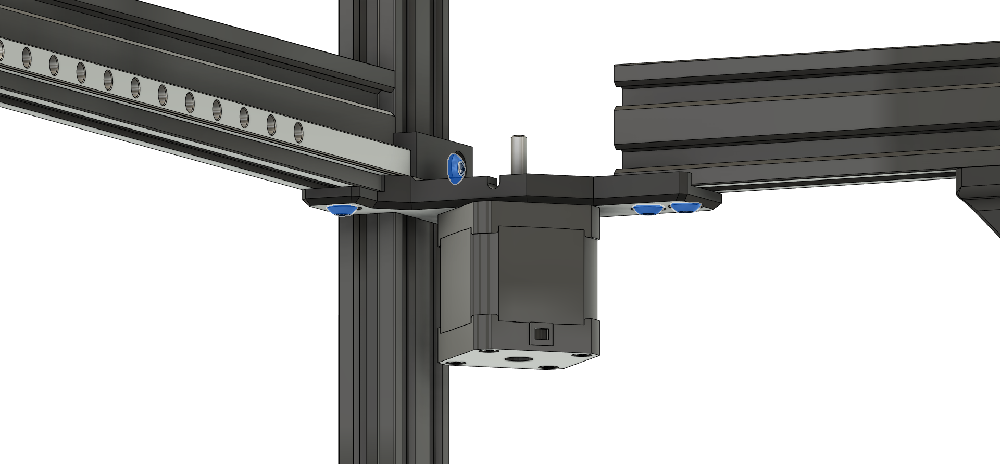
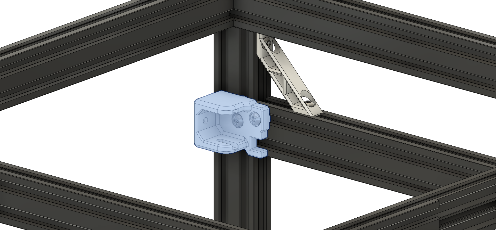
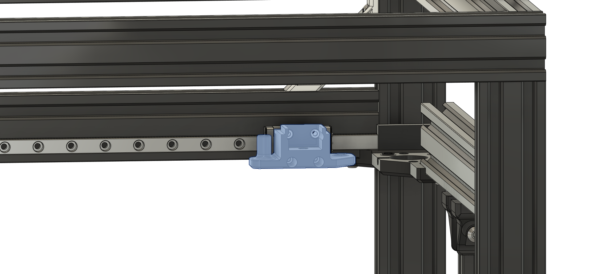

Installing the Gantry
Note: The following parts are installed the same way on both sides and highlighted in blue to help show which parts are used. Pictures are of the left side being installed.
Gantry Bracing
- Mount the Front and back Gantry Brace's Using (2) M5x10mm Screws and Hammer/Roll-In T Nuts to the Front and Rear 2040.
- Do the same for Right Side
- Do not fully tighten the back brace but enough that it will not move it will be removed later to install the "Top Motor Mounts".
Y 2040 Extrusion's
- Attach 2040 extrusion to the Braces with (2) M5x10mm Screws and Hammer/Roll-In T Nuts.
- Do the same for the Right Side
Bottom Motor Mounts
- Install Left and Right Motors with (3) M3x10mm screws
- Install the "Lower Motor Mounts" using (4) M5x10mm Screws and Hammer/Roll-In T Nuts.
- Do the same for the Right Side
- Now adjust the "Top Rear Motor Mount 2040" into position and tighten the screws.
Note: Do not tighten the "Top Rear Motor Mount 2040" all the way 
Front Idlers
- Install the Front Idler Mount's using (2) M5x10mm Screws and Hammer/Roll-In T Nuts.
- Do the same for Right Side
Note: The "Front Idler Mount's" have cutouts for the 400mm linear rails. The cutout should be lined up with the bottom slot on the 2040 extrusion. 
Jointer Bottoms
- Install the Jointer Bottom's using (4) M3x16mm Screws.
- Do the same for Right Side
Note: Make sure that the LEFT side Jointer Bottom is oriented the same as the picture. If not it is installed on the wrong side! 
X 2020/Tube
- Install Linear Rail to your choice of - 2020 Extrusion or Carbon Fiber/Aluminum Tube
- Place X 2020/Tube in the Jointer Bottoms